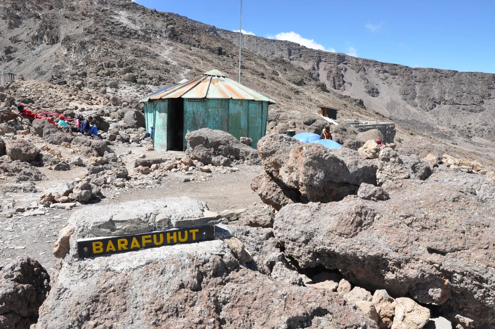

KilimanjaroLemosho: take the longer way up
A western approach, the Shira Plateau and a longer mountain journey, with arrival and recovery time around it.
Lemosho · Shira · Barranco · Barafu · Uhuru PeakESTIMATED FROMUSD 2,495 / adultBased on 4 climbers; two sharing each tent. Final written quote confirms the price.